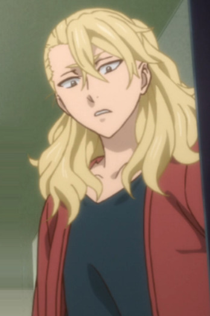
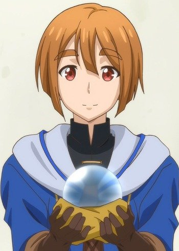
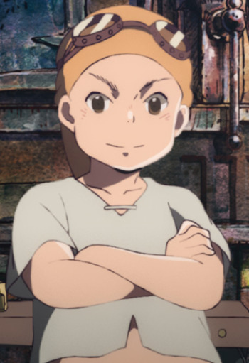

|
Akira Hayama |
|
Akira Hayama is a 92nd Tootsuki Generation and Jun Shiomi's assistant. He is quite the knowledge of usage of spices and is well known for sense of smell and mastery of aroma. He is confident and calm. Mutsumi Tamura voiced the younger Akira Hayama. |
|  |
Alice |
|
Alice is a Sorcerer and Renfred's apprentice. She speaks her mind for the most part. She has a good relationship with Chise. |
|  |
Camil |
|
Camil is an adventure and mage who is now serving the Jamil Family. |
 |
Jinta Yadomi |
- Anohana: The Flower We Saw That Day
- Anohana: The Flower We Saw That Day Movie
|
Jinta "Jintan" Yadomi is the leader of Super Peace Busters and close friends with Chiriko, Naruko, Tetsudo, Atsumu, and Meiko. During his childhood, he was energetic and outgoing. After the death of Menma and another one in his family, he became more withdrawn and isolated from society. Jinta became a hikkomori, refusing to go to school and staying at home. Mutsumi Tamura voiced the young Jinta Yadomi. |
 |
Lux Arcadia |
- Undefeated Bahamut Chronicles
|
Lux Arcadia was the prince of the Old Arcadia Empire. He is the user of the Divine Drag-Ride Bahamut. He has a very kind personality, being willing to help anyone. He has proven to have a strong moral code, even trying to avoid killing his enemies during the revolt. Most of time, Lux is very shy around girls his age. He can become very serious, calm and calculating when he wants to be. He can become aggressive and destructive in battle. He is very skilled at hiding his true strength. |
|  |
Nezu |
- Children of the Whales
- Children of the Whales Specials
|
Nezu is a Marked young boy and one of Chakuro's friends. He and Ro like to build all kinds of things. He is not the bravest or smartest person but he is a good friend and very nice. |
 |
Renly |
- Sword Art Online: Alicization - War of Underworld
- Sword Art Online: Alicization - War of Underworld: Part II
|
Renly Synthesis Twenty Seven is a high-ranking Integrity Knight bestowed with the Twin Edged Wings. Despite being a prodigy swordman, Renly lost the corage to fight after accidentally taking the life of his childhood friend. This moment cause him to have post-traumatic fear of killing. This fear makes him not want to battle at all. Overcoming his fear, he makes full potential of his Twin Edged Wings in combat. |
 |
Sora Kashiwagi |
|
Sora Kashiwagi is the best friend of Mii-kun. Sora is very caring and put himself in front of danger to spare others. Despite his cheery personality, he holds his thoughts to himself and does not push others to explain. He has knowledge of supernatural things around his place. She is good at cooking and sewing. He put all his love to take care of Mii-kun. |
 |
Taiju Ooki |
|
Taiju Ooki is a friend of Senku and Yuzuriha. He has a strong and sturdy body and helps Senku with carrying heavy items. He is very enthusiastic even for little tasks snd screaming a lot. He is still outgoing, friendly, loyal and kind person. He is very determine when something is important to him. He is a pacifist despite his great strength. He is greatly admires his best friend, Senku and easily impressed by Senku's invention. Mutsumi Tamura voiced younger Taiju Ooki. |